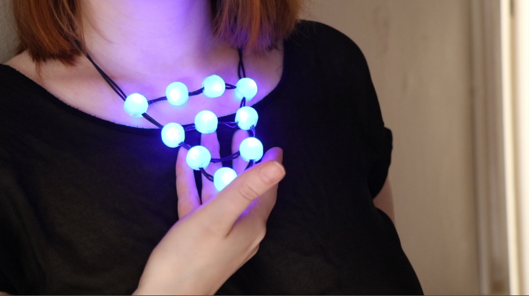
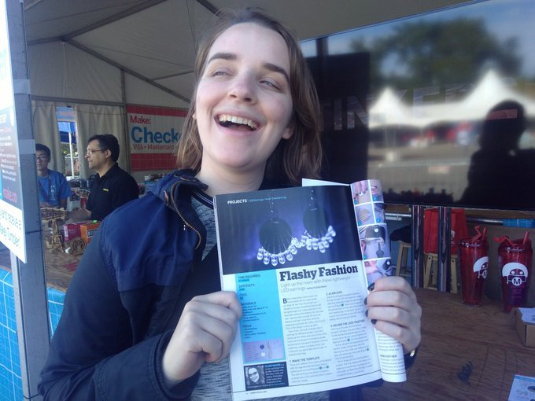

Web Design
I have some done work with local group to create useful websites.
Community Lunch On Capitol Hill
No questions asked, Community Lunch provides a hot gourmet meal and loads of take away goodies for those experiencing homelessness and under served in the Capitol Hill area
I currently sit on the board and act as webmaster. In 2022 I did a total webside rehaul that included producing a a short video for the homepage. Volunteer and information about the program and now
easy to find!
Seeds Of Grace
Seeds of Grace was a nonprofit based out of Kitsap County. Their mission was to build community gardens in areas of need. As of 2021 they
have gone inactive, but I have archived the site for my personal use.
Artist Blog
I'm really into design of all type. I enjoy 3d printing, electorics, fashion design,knitting, and crocheting. Some of my work has been publish in Make Magazine and HackSpace Magazine.
If you want to see more of my projects
visit my artist blog.


